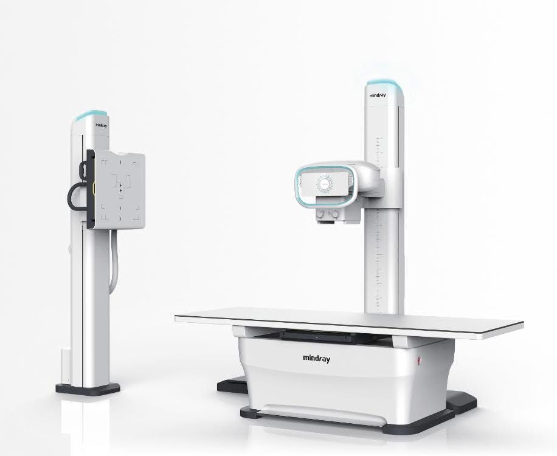
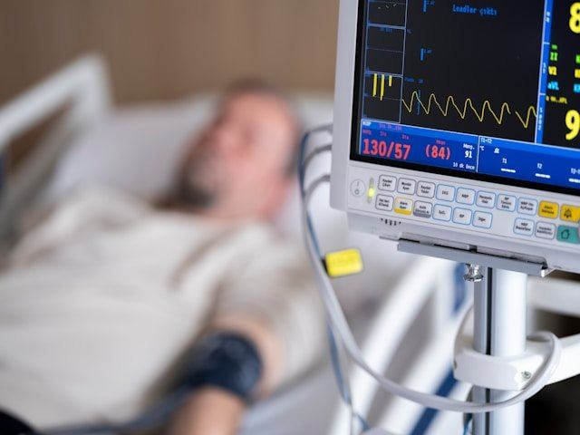
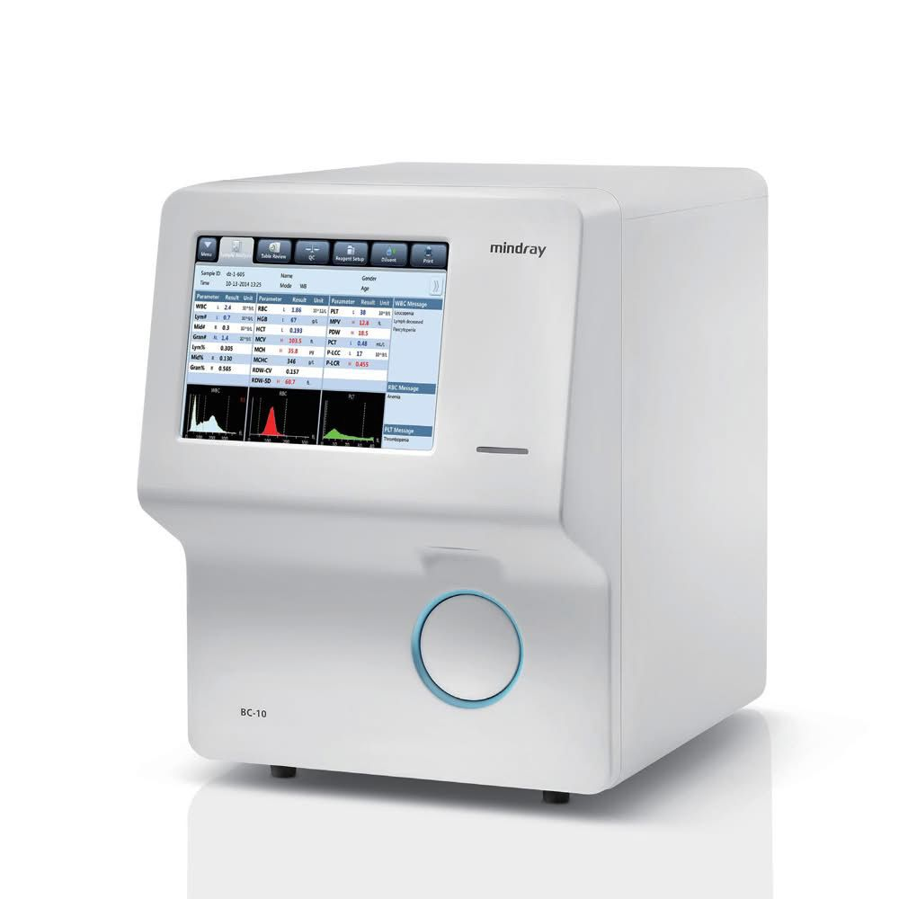
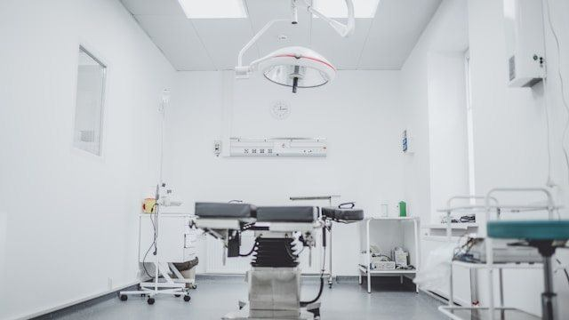
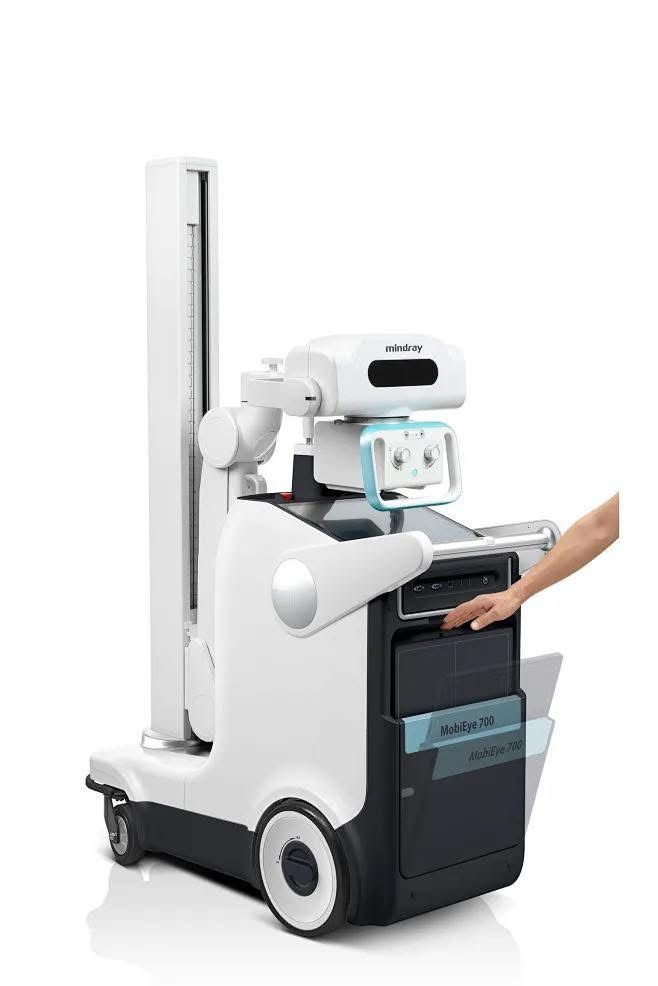
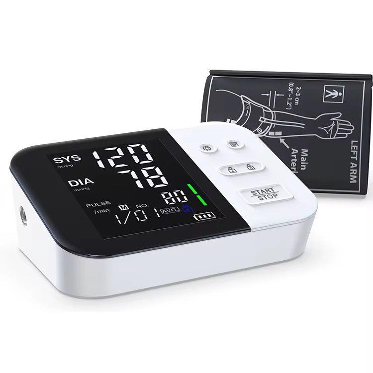

ACROMED HEALTHCARE Technologies Limited
High-quality medical equipment from trusted global manufacturers
We supply a comprehensive range of medical equipment for hospitals, clinics, and laboratories across East Africa.
ACROMED Healthcare Technologies partners with trusted international manufacturers to bring high-quality medical devices to healthcare facilities in Uganda and the surrounding region. Our product catalogue spans diagnostic imaging, patient monitoring, laboratory analysis, surgical equipment, and general medical devices. Every product we supply is carefully selected for reliability, safety, and value, and is backed by our full installation, training, and after-sales support services.
Our quality assurance process: Every product we import undergoes pre-shipment inspection at the manufacturer's facility to verify specifications, functionality, and packaging integrity. Upon arrival in Kampala, our team performs incoming quality checks including visual inspection for transit damage, functional testing of key parameters, and verification of documentation including user manuals, warranty cards, and certificates of conformity. Products are stored in climate-controlled conditions to prevent damage from humidity and temperature fluctuations before delivery to your facility. This two-stage inspection process minimises the risk of receiving defective equipment and ensures that what arrives at your facility is ready for installation and use.
Equipment selection guide: Choosing the right medical equipment for your facility depends on several factors including patient volume, available clinical expertise, infrastructure conditions, and budget. For a small clinic or health centre seeing up to 50 patients daily, we typically recommend a basic vital signs monitor, a portable ultrasound scanner, and an entry-level haematology analyser — this combination covers the most common diagnostic needs in outpatient settings. For a district hospital with 50 to 150 beds, we recommend adding a digital X-Ray system, a multi-parameter patient monitor for the ICU or high-dependency ward, and a semi-automated chemistry analyser for the laboratory. For referral hospitals and large private facilities, we provide comprehensive packages including advanced imaging, central monitoring stations, fully automated laboratory lines, and surgical theatre suites. Our team visits your facility to assess power stability, space availability, network infrastructure, and staffing levels before making recommendations, ensuring that the equipment we propose will integrate smoothly into your existing operations. Contact us for a personalised needs assessment and equipment proposal tailored to your facility.
Warranty and after-sales coverage: All equipment supplied by ACROMED comes with a minimum 12-month warranty covering manufacturing defects in materials and workmanship. Extended warranties of 24 or 36 months are available on selected product lines including patient monitors, ultrasound systems, and laboratory analysers. Our warranty covers repair or replacement of defective components, with our service team handling diagnosis and repair at your facility to minimise equipment downtime. Warranty does not cover consumables, damage from improper use, power surges, or unauthorised modifications. We provide a detailed warranty certificate with every delivery, specifying coverage terms, exclusions, and the procedure for requesting service. Beyond the warranty period, we offer renewable maintenance contracts (see our Services page) to keep your equipment performing reliably for years after the initial purchase.

Digital X-Ray systems, ultrasound scanners, and imaging accessories for accurate diagnostics across all departments. Our imaging portfolio includes fixed digital radiography systems for hospital radiology departments and portable units for bedside use. We supply systems from Mindray and other leading manufacturers, with complete installation, calibration, and training to help your team produce high-quality diagnostic images from day one.

Multi-parameter monitors, ECG machines, pulse oximeters, and vital signs monitors suitable for intensive care units, high-dependency wards, emergency departments, and general wards. Our monitoring solutions include bedside units, central station systems, and portable monitors that track heart rate, blood pressure, oxygen saturation, respiratory rate, and temperature in real time, giving clinical staff the information they need to respond quickly to changes in patient condition.

Hematology analyzers, chemistry machines, microscopes, centrifuges, and lab consumables from reputable manufacturers such as Mindray, Locmedt, Zeiss, and DLAB. Our laboratory solutions support diagnostic testing for haematology, clinical chemistry, microbiology, and general laboratory workflows. Each instrument is delivered with installation, calibration, and ongoing technical support to help your laboratory maintain accurate and reliable testing capabilities.

Surgical lights, delivery beds, autoclaves, and operating theatre equipment for surgical departments and maternity units. Our surgical lighting solutions provide bright, shadow-free illumination with adjustable settings for precision during procedures. We also supply delivery beds with ergonomic positioning, autoclaves for sterile instrument processing, and other theatre equipment to support safe and efficient surgical care in hospitals and clinics.

Mobile X-Ray units, portable ultrasound scanners, and handheld diagnostic devices designed for point-of-care use in wards, emergency departments, and remote settings. Our mobile equipment enables healthcare providers to bring diagnostic capabilities directly to the patient, reducing transfer times and supporting faster clinical decision-making. These units are durable, easy to operate, and backed by our maintenance and training services.

Blood pressure monitors, fetal dopplers, digital thermometers, pulse oximeters, and general diagnostic tools for routine patient assessment and screening. These devices are essential for outpatient departments, maternal health clinics, and general practice settings. We supply reliable, easy-to-use diagnostic instruments that help healthcare professionals make accurate clinical assessments quickly and efficiently.
Indicative pricing for popular products. Contact us for accurate quotations and bulk discounts.
| Product | Brand / Model | Indicative Price (UGX) |
|---|---|---|
| Automated CBC Analyzer | Mindray BC-10 | 15,000,000 |
| Chemistry Analyzer | Locmedt LOC-200 | 14,000,000 |
| Microscope | Zeiss PRIMOSTAR 3 | 5,000,000 |
| Ultrasound Scanner | Mindray Z50 | 35,000,000 |
| Oxygen Concentrator | DYNMED DO2-5AH | 3,000,000 |
| Delivery Bed | SINOME SINO-ST | 1,500,000 |
| Centrifuge | DLAB DM-0506 | 1,500,000 |
| Fetal Doppler | CONTEC BABY SOUND C | 350,000 |
| LED Medical Exam Light | LED-5000 | 800,000 |
| Autoclave 35L | AC-50 | 5,500,000 |
| Digital Thermometer | BERRCOM DT-007 | 20,000 |
Prices are indicative and subject to change. Contact us for a formal quotation.
Tell us what you need and we'll get back to you within 24 hours with the best pricing.
Request a Quotation